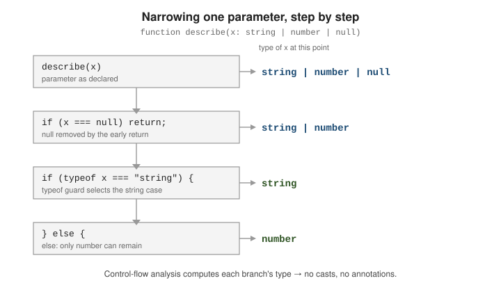

Unions and Narrowing
|
This content was generated with the assistance of AI and should be verified against the official documentation before being relied on in production. |
A union type describes a value that may be one of several types. TypeScript only lets you use operations valid for every member until you narrow the union — prove, with a runtime check the compiler understands, which member you actually hold. The full catalogue of narrowing constructs is in the handbook’s Narrowing chapter.
Declaring Unions
Write a union with |. Only members common to all constituents are accessible without narrowing:
function format(id: string | number): string {
// id.toFixed(2) // Error: 'toFixed' does not exist on 'string'
return id.toString(); // OK: both string and number have toString
}Union members can be literal types, giving a closed set of values — see Enums and Literal Alternatives for literal unions as an enum alternative.
The "billion-dollar mistake" and strictNullChecks
With strictNullChecks on (implied by strict), null and undefined are not assignable to other
types — add them to the union explicitly, and TypeScript then forces you to handle them:
function firstChar(s: string | null): string {
// return s[0]; // Error: 's' is possibly 'null'
if (s === null) return "";
return s[0]; // OK: s is 'string' here
}Turn the check off ("strictNullChecks": false) and every type silently admits null again — the
original "billion-dollar mistake". Keep it on. See The Type System for the
strict-mode flags.
Narrowing Guards and Control-Flow Analysis
TypeScript tracks the type of each variable along every code path — control-flow analysis. After a guard, the variable has a more specific type in the branch where the guard held, and often in the branch where it did not.

typeof
function pad(value: string | number, width: number): string {
if (typeof value === "string") {
return value.padStart(width); // value: string
}
return " ".repeat(Math.max(0, width - 1)) + value; // value: number
}The recognised results are "string", "number", "bigint", "boolean", "symbol",
"undefined", "object", and "function". Note typeof null === "object" — a classic trap that
does not narrow away null.
Truthiness
A bare condition removes null, undefined, 0, "", NaN, and false:
function greet(name?: string): string {
if (!name) return "Hello, stranger";
return `Hello, ${name}`; // name: string
}Truthiness also excludes the empty string and 0, which may be valid inputs — prefer an explicit
name === undefined when only nullishness matters.
Equality and ===
Comparing two variables narrows both to their shared type:
function compare(a: string | number, b: string | boolean): void {
if (a === b) {
// a and b are both 'string' here
console.log(a.toUpperCase(), b.toUpperCase());
}
}Comparison against a literal (x === "done") narrows to that literal; x != null removes both null
and undefined.
in
The in operator narrows by property presence:
type Admin = { role: "admin"; permissions: string[] };
type Member = { role: "member"; lastLogin: Date };
function summarise(account: Admin | Member): string {
if ("permissions" in account) {
return `${account.permissions.length} permissions`; // account: Admin
}
return `last seen ${account.lastLogin.toISOString()}`; // account: Member
}instanceof
function describeError(e: Error | string): string {
if (e instanceof TypeError) return `type error: ${e.message}`;
if (e instanceof Error) return e.message;
return e; // e: string
}Assignment narrowing
Assigning a value narrows the variable to that value’s type from that point on, within its declared type:
let result: string | number = fetchRaw(); // string | number
result = result.length; // assigned a number
result.toFixed(2); // OK: result is 'number' hereControl-flow: the type at each point
TypeScript re-derives the type after return, throw, break, and continue cut a path short — the SVG above traces exactly this function:
function label(x: string | number | null): string {
if (x === null) return "none"; // below here: string | number
if (typeof x === "string") {
return x.trim(); // x: string
}
return x.toFixed(0); // x: number (string already handled)
}Discriminated (Tagged) Unions
Give every member a common literal property — the discriminant — so a check on it narrows the whole object. This is the pattern TypeScript optimises for; see Discriminated unions.
type Circle = { kind: "circle"; radius: number };
type Square = { kind: "square"; side: number };
type Rect = { kind: "rect"; w: number; h: number };
type Shape = Circle | Square | Rect;
function area(shape: Shape): number {
switch (shape.kind) {
case "circle": return Math.PI * shape.radius ** 2;
case "square": return shape.side ** 2;
case "rect": return shape.w * shape.h;
default: return assertNever(shape);
}
}Exhaustiveness with assertNever
In the default: branch every case is handled, so shape has type never. A helper that only
accepts never turns a missing case into a compile error — add a fourth Shape member and area
stops compiling until the new case is handled:
function assertNever(value: never): never {
throw new Error(`Unhandled union member: ${JSON.stringify(value)}`);
}Type Predicates and Assertion Functions
Type predicates (x is Fish)
A function whose return type is param is Type is a user-defined type guard: callers narrow on its
boolean result.
type Fish = { swim: () => void };
type Bird = { fly: () => void };
function isFish(pet: Fish | Bird): pet is Fish {
return typeof (pet as Fish).swim === "function";
}
function move(pet: Fish | Bird): void {
if (isFish(pet)) pet.swim();
else pet.fly();
}Since 5.5 TypeScript also infers a predicate for a simple function such as p => p !== null, so
array.filter(x => x !== null) yields the non-null element type without an explicit annotation.
Assertion functions (asserts x is ...)
An assertion function throws instead of returning a boolean; on a normal return the compiler treats the assertion as proven from that point on. Documented under Assertion functions.
function assert(condition: unknown, msg?: string): asserts condition {
if (!condition) throw new Error(msg ?? "Assertion failed");
}
function assertIsString(val: unknown): asserts val is string {
if (typeof val !== "string") throw new Error("Not a string");
}
function loud(input: unknown): string {
assertIsString(input);
return input.toUpperCase(); // input: string from here on
}asserts condition with no is narrows using the truthiness of the argument — after assert(x),
x is known to be truthy.
"Evolving" any
A let with no annotation and no initialiser starts as evolving any: its type follows each
assignment until first use, without noImplicitAny complaining.
let value; // evolving any
value = 42; // value: number
value.toFixed(1); // OK
value = "text"; // value: string
value.toUpperCase(); // OKReach for this only in tight local code; an explicit union is clearer to a reader.
Tracing the narrowing of RequestState
Control-flow analysis keeps, for every point in a function, the set of members a union can still be. Each guard splits
that set into a "true" part and a "false" part, and the two branches carry their own. This is easiest to see on the
RequestState union of the worked example, where the
members are four object types distinguished by kind:
s.data is available"] G1 -->|"false"| F1["s: idle | loading | error"] F1 --> G2{"s.kind === 'error'?"} G2 -->|"true"| T2["s: error
s.error is available"] G2 -->|"false"| F2["s: idle | loading"] F2 --> N["const rest: never = s
fails: two members left"]
The compiler’s own messages print the type at each of those points. The first function narrows by hand, and every comment marks a point where the error text reveals the set that remains:
function render2(s: RequestState<string>): string {
if (s.kind === "success") return s.data;
s.error; // error: s is still idle | loading | error here
if (s.kind === "error") return s.error; // ok: narrowed to the error member
const rest: never = s; // error: idle and loading remain
return "";
}un.ts(19,5): error TS2339: Property 'error' does not exist on type '{ readonly kind: "idle"; } | { readonly kind: "loading"; } | { readonly kind: "error"; readonly error: string; }'.
Property 'error' does not exist on type '{ readonly kind: "idle"; }'.
un.ts(21,9): error TS2322: Type '{ readonly kind: "idle"; } | { readonly kind: "loading"; }' is not assignable to type 'never'.
Type '{ readonly kind: "idle"; }' is not assignable to type 'never'.The first error shows the success member already removed (the early return ended that branch), and the second shows
that after the error check, exactly idle and loading are left. Assigning to never is therefore a precise
exhaustiveness probe: the error message lists the arms you have not handled.
The switch form with assertNever fails the same way when an arm is forgotten. Removing the "error" case from
the switch of render gives:
un.ts(14,33): error TS2345: Argument of type '{ readonly kind: "error"; readonly error: string; }' is not assignable to parameter of type 'never'.The unhandled member is named in the error, which is the property that makes this idiom valuable: adding a fifth
kind later breaks every switch that does not handle it, at the line where the decision is made.
Truthiness is not a null check
A truthiness guard narrows away null and undefined, but it also removes 0, "" and NaN, which are often valid
values. The runtime facts that the guard depends on:
console.log([0, "", null, undefined, NaN, "0", [], {}].map(v => !!v));
console.log(typeof null, typeof [], typeof (() => 1), Array.isArray([]));[ false, false, false, false, false, true, true, true ]
object object function true(Node prints the first array in columns.) Eight values, five of them falsy: 0, "", null, undefined, NaN. The string
"0", an empty array and an empty object are truthy. typeof cannot tell an array from an object (both give
"object") nor a null from an object, which is why those cases need Array.isArray and an explicit !== null.
function show(x: string | number | null | undefined) {
if (x) { const a: string | number = x; } // ok: null, undefined, 0 and "" removed
if (!x) { const c: string = x; } // error: the false branch can be 0, "", null or undefined
if (x != null) { const d: string | number = x; } // ok: != null removes null and undefined only
}un.ts(27,68): error TS2322: Type 'string | number | null | undefined' is not assignable to type 'string'.
Type 'undefined' is not assignable to type 'string'.In the !x branch the checker cannot exclude number (because 0 is falsy) nor string (because "" is falsy), so
the branch keeps the whole union. Use x != null (or x !== undefined) when you mean "present", and reserve the bare
truthiness check for cases where an empty value is meant to be treated as absent.
Closures, let and narrowing that does not stick
A narrowing holds for the rest of the flow, but a function created inside the flow only keeps it if the variable
cannot change afterwards. A const parameter or const variable is safe. A let that is reassigned after the closure is
created is not:
function f(x: string | undefined) {
if (x === undefined) return;
const len = () => x.length; // ok: x is never reassigned
return len;
}
function g(x: string | undefined) {
let y = x;
if (y === undefined) return;
const len = () => y.length; // error: y is assigned again below
y = undefined;
return len;
}un.ts(47,21): error TS18048: 'y' is possibly 'undefined'.The compiler is right to complain: by the time len runs, y is undefined. Recent releases are smart enough to keep
the narrowing in a closure when there is no assignment after the closure’s creation, which is why f passes, and a
let that is assigned only before the closure works too.
A type predicate is a promise, not a proof
x is string tells the checker to believe the result. The body is not checked against the claim, so a predicate that
lies is accepted and produces a runtime failure the types promised could not happen:
function isString(x: unknown): x is string { return typeof x === "number"; } // wrong, and accepted
const val: unknown = 5;
if (isString(val)) { console.log(val.toUpperCase()); }TypeError: val.toUpperCase is not a functionTreat every user-defined guard as code that needs a test: it is the one place where narrowing rests on your word. Prefer
built-in guards (typeof, in, instanceof, Array.isArray, a kind comparison) wherever they are enough, because the
checker verifies those itself.
Keeping Narrowing
Alias narrowed values consistently
Narrowing follows a symbol, not an expression. Give a narrowed sub-expression a const name and use
that name — not the original property path — afterwards:
type Box = { contents: string | null };
function render(box: Box): string {
const contents = box.contents;
if (contents === null) return "(empty)";
return contents.toUpperCase(); // stays 'string'; box.contents would re-widen
}Narrowing does not cross a function boundary
A check in the caller is invisible inside a nested function or callback — extract a guard instead:
function process(items: (string | null)[]): string[] {
// items.filter(x => x != null).map(x => x.toUpperCase()) // pre-5.5: x still string | null
return items
.filter((x): x is string => x !== null)
.map(x => x.toUpperCase());
}The explicit x is string predicate carries the narrowing across the .filter() boundary.
See Also
-
The Type System — how unions sit in the wider type system, and the strict flags.
-
Type Design and Best Practices — modelling data so illegal states are unrepresentable.
-
Enums and Literal Alternatives — literal unions as the discriminant and as an enum replacement.